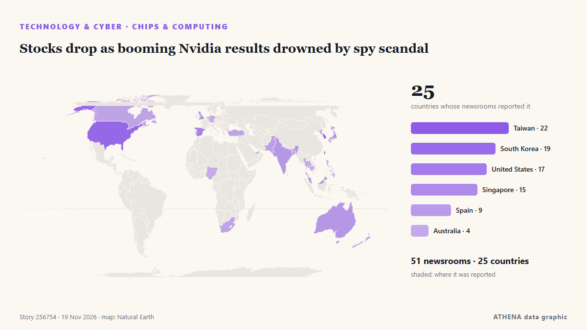

Technologie, IA et cybersécurité
SponsoriséPrésenté par  Cybernetics and Artificial Intelligence Lab Welcome to the Cybernetics and Artificial Intelligence Laboratory, established at the Department of Business Administration of the National and Kapodistrian University of Athens. The lab is headed by Professor Dimitrios Thomakos. The lab aims to do research that can be published in top venues. Our research uses tools and methods of Artificial Intelligence, and lies in the following areas: - Forecasting - Decision making - Cyber security - Finance We are always looking forward to collaborating with exceptional students!
Cybernetics and Artificial Intelligence Lab Welcome to the Cybernetics and Artificial Intelligence Laboratory, established at the Department of Business Administration of the National and Kapodistrian University of Athens. The lab is headed by Professor Dimitrios Thomakos. The lab aims to do research that can be published in top venues. Our research uses tools and methods of Artificial Intelligence, and lies in the following areas: - Forecasting - Decision making - Cyber security - Finance We are always looking forward to collaborating with exceptional students!
Les titres sont affichés en anglais, tels que publiés.

Puces et calculStocks drop as booming Nvidia results drowned by spy scandal
Asian equities failed yesterday to capitalise on blockbuster earnings from Nvidia that soothed concerns about the artificial intelligence (AI) boom but were overshadowed by concerns about a spy… de Khmer Times
| 6 nov. | 54 |
|---|---|
| 7 nov. | 37 |
| 8 nov. | 42 |
| 9 nov. | 104 |
| 10 nov. | 114 |
| 11 nov. | 83 |
| 12 nov. | 74 |
| 13 nov. | 87 |
| 14 nov. | 39 |
| 15 nov. | 44 |
| 16 nov. | 113 |
| 17 nov. | 93 |
| 18 nov. | 64 |
| 19 nov. | 7 |
On Nvidia scandal, Trump says US spies on China too and is ‘better’ at it
Suspected China spy linked to Nvidia's ex-boss left in 2025, Megaspeed says. de Ada Derana
GTA 6 Launch Highlights: India Gets Blockbuster Game After 13-Year Wait
GTA 6 Launch Highlights: The latest version of Grand Theft Auto VI (GTA 6) is taking players back to Vice City and other parts of the Leonida state. de NDTV World
Nvidia faces a new threat after Jensen Huang's ouster: Losing its best engineers
Nvidia is offering better compensation to try to retain engineers after Jensen Huang's ouster. de Business Insider
Musk accuses Ukraine’s Zelensky of lying about Starlink
The SpaceX boss said Volodymyr Zelensky asked to use commercial satellites for offensive military operations, but the company declined to do so. de Free Malaysia Today
Surge in software patches likely behind recent tech outages, experts say
AI tools and large language models have supercharged the discovery of vulnerabilities in software. de The Straits Times
NTT, ispace forge alliance for Earth-to-Moon connectivity
NTT and ispace are developing ultra-long-distance optical communication systems and laser-based wireless power transmission systems for use in deep space and on the Moon. de Light Reading
Mexican journalist Eduardo Flores killed in Acapulco
Mexico City, November 18, 2026 – Mexican authorities must immediately, credibly and transparently investigate the killing of journalist Eduardo Flores Salado, the Committee to Protect Journalists… de Committee to Protect Journalists
‘Human’ is Cambridge Dictionary’s word of the year
Other new words added to the dictionary in 2026 included “aura farming” and “looksmaxing”. de The Straits Times
Over half million students set to take annual college entrance exam amid AI cheating concerns
SEOUL, Nov. 19 (Yonhap) -- The annual college entrance exam was set to be held n... de Yonhap (English)
Credit union customer data obtained by 'bad actor' in cyberattack, says minister
Robert Troy confirmed that around 40 of Ireland’s 160 credit union institutions were affected by the hack. de TheJournal.ie
Google signs PPA to buy 50MW geothermal power from Quaise Energy
Google has entered into a PPA to acquire 50MW of geothermal energy from Quaise Energy’s Project Obsidian in Central Oregon, US. de Power Technology
Equinor dealing with cyberattack against some of its IT systems
Norwegian energy company Equinor says it is contending with a cyberattack against some of its IT systems. de The Canadian Press (via CityNews)
Governments warn Java flaw leaves computer systems open to hackers
Governments around the world sounded the alarm on Wednesday over a critical flaw in the popular programming language Java that could allow hackers to access computer systems, the latest high-profile… de Insurance Journal
It’s launch day for ‘Grand Theft Auto VI’. The 13-year wait is over at midnight
After a 13-year wait, one of entertainment’s biggest releases is finally here. de Fast Company
UN to Debate Rules for ‘Killer Robots’
Concerns grow about their increasing use on the battlefield. de The Straits Times
OpenAI gives NATO access to most advanced cybersecurity AI
NATO operators this month built and deployed AI agents in an exercise, with help from OpenAI. de Defense One
Voyager 1 spacecraft reaches one light-day milestone
The spacecraft is now about 26 billion kilometres (16 billion miles) away, according to NASA. de Express Tribune
CISA Urges Immediate Patching of Java4Shell Flaw That Could Allow Remote Code Execution
The U.S. Cybersecurity and Infrastructure Security Agency (CISA) has urged organizations to immediately patch a newly disclosed critical security flaw impacting Oracle Java. de The Hacker News
Chinese Robots Learn from Humans in Tech Hub Shenzhen
In Shenzhen, China, humanoid robots serve coffee and ice cream while AI developers use human-recorded movements to train machines for everyday jobs. de Euronews English
Police raid Turkiye’s pro-opposition broadcaster Sozcu TV
ISTANBUL: Turkish police raided the Istanbul headquarters of the pro-opposition Sozcu TV and its media group early on Tuesday, conducting arrests and installing a government-appointed administrator… de Arab News
Apple outage hits iCloud, App Store as company rules out cyberattack
Apple has said an internal update, not a cyberattack, caused widespread outages that disrupted iCloud, Apple Pay, the App Store and other services on Tuesday. de Gulf News
INDIA bloc leaders turn out for Sonia Gandhi’s memoir launch
With chief ministers of six states and leaders from five allies in attendance, the event turned into a show of solidarity for the INDIA bloc. de Hindustan Times
South Korea is offering $75,000 rewards to help catch people cheating with AI in its most important exam
South Korea is combating AI cheating in the national high-stakes university entrance exam by introducing bounties and inspecting glasses. de Business Insider
China warns US of retaliation over new AI chip restrictions
The restrictions threaten to overshadow Xi’s meeting with Donald Trump this week. de The Business Times
Uber and Zipline’s drone delivery service takes flight in Houston
Uber Eats is officially launching drone delivery in partnership with Zipline starting Tuesday. de The Verge
Gunmen kill Costa Rican journalist who reported on drugs trade
Rodríguez had denounced alleged links between criminal organisations and powerful figures in Costa Rica. de BBC News
CNN, BBC, Zoom among 178 targets hit by malicious software attack
Hackers used a compromised website optimization service to distribute malicious software to 178 organizations, including CNN, BBC, Zoom and HSBC. de UPI World News
‘I am not guilty’: Russell Brand statement read by wife
Authorities are investigating Brand over a message from prison, read publicly by his wife, in which he declared his innocence. de Sydney Morning Herald
California sues OpenAI over Hugging Face attack
California Attorney General Rob Bonta sued OpenAI on Monday, alleging the ChatGPT-maker misled and endangered the public by developing artificial intelligence (AI) models without proper safeguards. de MyJoyOnline
Google Maps rolling out travel itineraries & list search for Ask Maps
Ahead of the holiday season, Google Maps is launching a handy travel itineraries feature alongside a slew of other new capabilities for Ask Maps. more… de 9to5Google
‘GTA Flu’ could hit workplaces as millions prepare for GTA 6 release
By Zoila Palma: The highly anticipated release of Grand Theft Auto VI (GTA VI) on November 19 has sparked predictions of a wave of employee absences as fans prepare to take time off to play the game. de Breaking Belize News
US to curb China's access to AI chips as Trump heads to Asia
It also requires companies in Singapore, Thailand, Malaysia, Indonesia and Brazil to apply for US export licences. de The Straits Times
Tuned Instagram systems in India to curb sexually suggestive, violent content: Meta
Meta, which owns and operates Facebook and Instagram, said its systems now use “more capable AI models” that check content before it is recommended. de Hindustan Times
Seoul stocks open tad lower ahead of Nvidia earnings, key events
South Korean shares opened slightly lower Monday as investors braced for a series of major US events this week, including Anthropic's initial public offering and Nvidia Corp.'s earnings release, amid… de Korea Herald